概述
什么是模式
在一个环境中对一个问题的解决方案就是模式
为什么需要模式
有经验的程序员会复用过去问题中的解决方案。结构优良的面向对象系统有类和对象的迭代模式。对过去模式的知识的学习让一个开发者效率更高而且让设计变得更活且可复用。
Benefits Of Design Patterns
Capture expertise and make it accessible to
non-experts in a standard form
n Facilitate communication among developers
by providing a common language
n Make it easier to reuse successful designs
and avoid alternatives that diminish
reusability
n Facilitate design modifications
n Improve design documentation
Improve design understandability
为什么需要学习设计模式
- 可以复用设计的专业知识
- 让软件更加灵活可变，可拓展
- 统一两个工程师之间的交流术语
设计模式的弊端
- 权衡：设计模式有可能会很复杂
- 没有经验的用户可能会使用比实际需要更多的设计模式
- 你应当试图提醒自己为什么要用设计模式，模式是一个工具，使用模式，而不是模式使用你！
设计模式的种类
- 分析
- 设计
- 组织
- 过程
- 项目计划
- 配置管理
Types Of Software Patterns
n Riehle and Zullighoven in “Understanding and Using
Patterns in Software Development” mention three types
of software patterns. q Conceptual Pattern
n Pattern whose form is described by means of terms and
concepts from the application domain
q Design Pattern
n Pattern whose form is described by means of software design
constructs, such as objects, classes, inheritance and
aggregation
q Programming Pattern (Programming Idiom)
n Pattern whose form is described by means of programming
language constructs
三种模式类型
Creational Patterns 创建型
- Abstract Factory (抽象工厂)
- Builder (建造者)
- Factory Method (工厂方法)
- Singleton (单例)
- Prototype (原型)
Structural Patterns 结构型
- Adapter (适配器)
- Bridge (桥接)
- Composite (合成)
- Decorator (装饰器)
- Facade (门面)
- Flyweight (享元)
- Proxy (代理)
Behavioral Patterns 行为型
- Chain of Responsibility (责任链)
- Command (命令)
- Interpreter (解释器)
- Iterator (迭代器)
- Mediator (中介者)
- Memento (备忘录)
- Observer (观察者)
- State (状态)
- Strategy (策略)
- Template Method (模板方法)
- Visitor (访问者)
UML
统一建模语言UML(Unified Modeling Language)是一个软件工程行业中，需求普遍的的开发这建模语言，用来提供一种标准的来虚拟化系统设计的方法。
类图(Class Diagram)是一种静态的结构化图表，通过展现系统的类，变量，方法来描述系统的结构和对象之间的关系
画类图:
三个矩形,上中下分别写类名,成员变量,方法名,如果是抽象类,则类名需要用斜体表示,静态的成员变量和方法需要加上下划线
继承使用空三角箭头实线,接口使用<<interface>>标识,接口实现类使用空心三角虚线
聚合表示不是一定具有的关系,用空心箭头,组合是强关系,一方依赖一方存在,用实心箭头
成员方法中,+-#~分别表示公有,私有,保护,默认/友元
一切类之间的其他关系用普通箭头表示(uses…creates….notifies….)
时序图
时序图是一个展示对象按照何种顺序一个一个操作的交互图,展现了对象在时间序列中如何交互
面向对象准则
面向对象设计的7大准则
- SRP: Single Responsibility Principle 单一职责原则
- OCP: Open-Closed Principle 开放-封闭原则
- LSP: Liskov Substitution Principle 里氏替换原则
- ISP: Interface Segregation Principle 接口分离原则
- DIP: Dependence Inversion Principle 依赖倒置原则
- CRP: Composite/Aggregate Reuse Principle 组合/聚合复用原则
- PLK: Principle of Least Knowledge 最小知识原则
SOLID表示前5个设计原则,目的是让软件设计更加易于理解,灵活和可维护
面向对象设计的7大致命错误
- Rigidity (僵化) – make it hard to change
- Fragility (脆弱) – make it easy to break
- Immobility (固化) – make it hard to reuse
- Viscosity (黏滞) – make it hard to do the rightthing
- Needless Complexity (非必要复杂性) – over design
- Needless Repetition (非必要重复) – error prone
- Not doing any design
SRP
Single Responsibility Principle
从软件变化的角度来看，就一个而言，应该仅有一个让他发生变化的原因。单一职责原则及内聚性（Cohesion），表示一个模块的组成元素之间的功能相关性。
单一职责意味着内聚性的上升，多职责意味着耦合性上升，会导致复用性下降
OCP
Open Closed Principle
软件实体（类，模块，方法等）应该开放扩展，但应关闭修改。
- 开放扩展：满足增加新模块的需求
- 关闭修改：不需要且不能够修改当前模块来满足新的需求
基于已经存在的系统，软件来提供新方法来满足需求，应次软件有很强的适应性和灵活性。已存在的模块，尤其是最重要的那些抽象模块（已经被仔细测试过的），不需要再被修改，因此软件有很强的稳定性和持久性。
实现
依赖抽象，多态，继承，接口
抽象是指抽象类和接口，他们是固定的但是有很多可能的行为，行为由继承/实现了他们的子类去完成。接口是预定义的，所以不能够被修改。接口开放扩展，因为他有灵活的继承者数量。修改接口会给他的子类继承者带来级联的改变。
例子：class GraphicEditor {
public void drawShape(Shape s) {
s.draw();
}
}
abstract class Shape {
abstract void draw();
}
class Rectangle extends Shape {
public void draw() {
// draw the rectangle
}
}
可以新增图形继承Shape类，实现draw()方法，每次调用该方法都对对应相对的实现方法。
OCP不能总被完全满足，总有一些功能扩展不能在不修改代码的基础上实现。OCP应该在合理的范围内被使用，设计者应该预测到模块潜在的变化，之后建立相应的抽象类来实现他们。
OCP是面向对象设计的核心，抽象是OCP的核心，OCP意味着更好的复用和可维护性。过分使用OCP也是个坏主意，我们应该把那些经常变化的类抽象，同时也要避免无意义的抽象。不可能所有系统模块满足OCP，但是我们应该让不满足OCP的模块最小化。
LSP
Liskov Substitution Principle(里氏替换原则)
任何基类可以出现的地方，子类一定可以出现。
所有的派生类遵从满足他们基类的行为。当一个子类的实例应该能够替换任何其超类的实例时，它们之间才具有is-A关系。
里氏替换原则只是提出了一个问题，但没有给出解决方案。解决方案：契约式设计(Dedign by Contract)
- Pre-conditions
- 每个方法调用之前，该方法应该校验传入参数的正确性，只有正确才能执行该方法，否则认为调用方违反契约，不予执行。这称为前置条件。
- Post-conditions
- 一旦通过前置条件的校验，方法必须执行，并且必须确保执行结果符合契约，这称之为后置条件。
- Invariant
- 对象本身有一套对自身状态进行校验的检查条件，以确保该对象的本质不发生改变，这称之为不变式。
比如正方形不能替代矩形，所以不能让正方形继承矩形，那么正方形就必须也有setWidth()和setHeight()的方法，而应该让正方形和矩形一起继承四边形。
LSP的解决方法：
- 可以让两个不能代替的类继承一个抽象类
- 可以让一个类持有一个类（聚合关系）
LSP是使用继承的准则，LSP是理论主义和严格的，有时打破SP一点是合理的且有益的，无论如何，在设计继承关系时，LSP是需要考虑的。
ISP
Interface Sepregation Principle 接口分离原则
ISP就是SRP的接口版本，一个类对另一个类的依赖关系应该取决于最小的接口
接口应当是细粒度的，内聚的，大的接口会导致接口污染，减少接口的数量不能减少代码量，只能污染接口;接口应该尽可能小，甚至接口中没有方法定义都是合理的。
DIP
Dependence Inversion Principle (Hollywood Principle)依赖倒置原则
Don’t calln us,we’ll call you
高层模块不应该依赖于低层模决，二者都应该依赖于抽象。进一步的，抽象不应该依赖于细
节，细节应该依赖于抽象。
Bad example:class Hunter {
public void take(Axe axe){}
public void take(Gun gun){}
public void take(Knife knife){};
....
}
class Axe() {
}
Good Example:依赖一个抽象的类class Player {
public void take(Weapon w){}
}
class Hunter extends Player{
}
class Axe extends Weapon {
}
提升灵活性，可测试性，可维护性，降低僵化
高层为一个服务指定一个抽象接口，底层去实现这个接口，高层通过接口使用实现了他的底层的类的方法，所以高层不依赖于底层。相反，底层愈来愈高层指定的接口。依赖关系倒置。
DIP原则：
- 任何变量不应该有一个指向具体类的引用，而应该有一个指向抽象类的引用。
- 任何类不能继承一个具体类
- 任何方法不能重写基类中基本的方法
- DIP是过分严格的
DIP是用来解耦的，用于类不稳定时，DIP的目的是经常使用接口而不是具体类
共享的代码应该被放到抽象层的抽象类中，私有数据应该被移到具体类
CRP
Composite/Aggregate Reuse Principle
多用组合，少用继承。组合/聚合复用原则就是在一个新的对象里面使用一些已有的对象，使之成为新对象的一部分；新的对象通过向这些对象的委派达到复用已有功能的目的。
比如父类中增减字段会导致所有子类需要重写。可以让子类继承接口，父类有接口的一个句柄。
聚合是一个has a的关系，组合是全体局部的关系。
组合聚合是黑盒复用，被包含者的内部不可见。继承是白盒复用，强耦合，被继承者内部可见。
!重新看第三章PPT设计原则
Observer(观察者)
观察者是一种行为模式
概述
例子：当宝宝哭，爸爸必须立刻查看宝宝：
一种实现方式：Father使用while忙等待，坚挺宝宝的status是否为哭，但这样会浪费大量的资源；如果要增加宝宝的数量，就需要修改Father的代码，增加每次循环中判断的次数；如果增加一个妈妈，又会增加重复的代码。为了实现监听对象的状态的变化，映入观察者模式：此例中Baby是对象(Subject)，妈妈爸爸是观察者(Observer)。
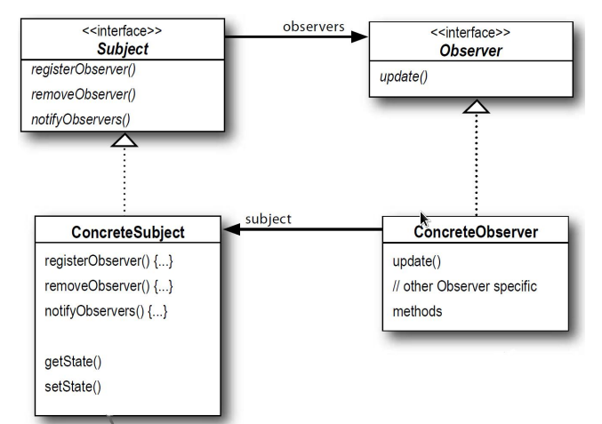
Subject是一个接口，所有被观察者实现它，被观察者的实例中包含一个存储observer的容器，用registerObserver(),removeObserver()来维护容器中的observer句柄的增删。notifyObservers()则遍历容器，调用容器中每个对象的update()方法，一般来说update()中传入this指针。一般来说这三个方法写作attach()，detach()，notify()。
优点
同样所有观察者只需要实现observer接口，相互依赖的两者都各自抽象，做到了松耦合。
每个观察者都可以成为容器里的一个元素，实现了一个对象对应多个观察者，无需修改代码即可增删观察者。只需要观察者实现update的操作，而被观察者无需知道观察者的具体类型；观察者和被关查者可以属于不同的抽象层。同时事件得以广播，观察者可以在任何时间被增删。
缺点
- 观察者之间感受不到互相的存在，他们对改变subject带来的影响可能是盲目的
- 一个观察者对Subject的人畜无害的改变可能带来灾难性的后果
用途
观察者模式又称publish-subscribe(发布订阅)，awt和一些框架(MVC)，事件监听器，都用到了观察者模式。
Java内建Observer
observable作为一个类让Subject继承，观察者需要实现Observer接口。
要注意调用了setChanged()之后，notifyObservers()才有用
Strategy(策略)
把可能变化的代码独立出来，不要和不变化的代码混在一起。
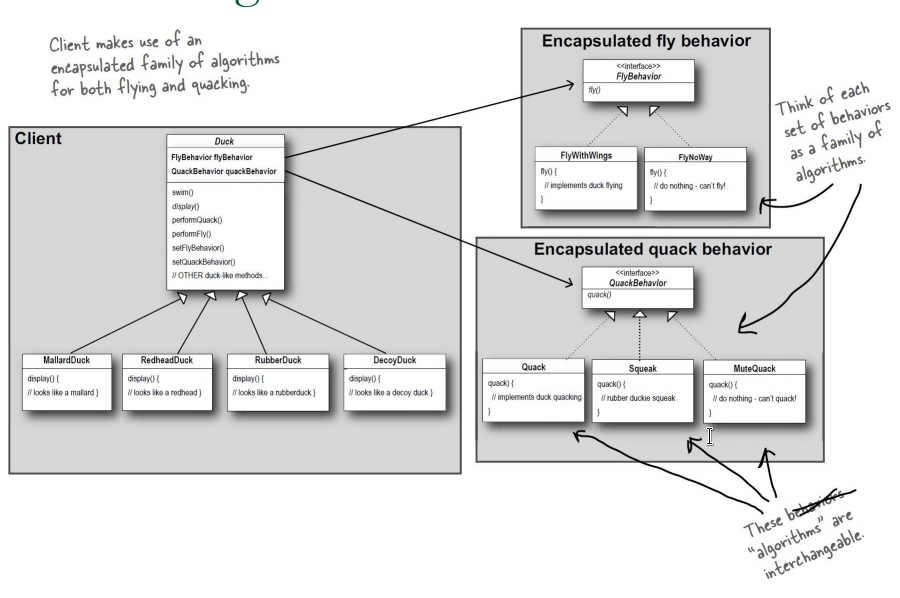
针对接口编程，而不是针对实现编程。这种做法体现了依赖倒置原则，体现了少用继承的观点。通过持有接口，增加了模块的灵活性，让你可以在运行时改变行为。
针对一组算法，将每一个算法封装到具有共同接口的独立的类中，从而使得它们可以相互替换。策略模式使得算法可以在不影响到客户端的情况下发生变化。客户决定使用哪个算法。
每个类由于自己的角色决定了他们不同的行为，策略模式提供了一种改变他们行为的方法。这种方式可以有效减少if语句的使用，让一些可替代的模块更具可扩展性和可重用性。
但是这种模式也导致了客户使用难度的上升和对象的数目的增加。
awt中的体现
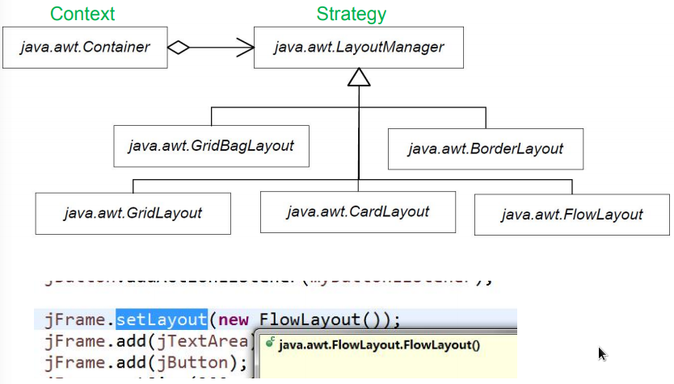
Factory Method(工厂方法)
工厂方法是一种创建模式，用来解决不同子类的创建耦合的情况。
例：if (picnic) {
duck = new MallardDuck();
} else if (hunting) {
duck = new DecoyDuck();
} else if (inBathTub) {
duck = new RubberDuck();
}
定义一个接口来创建对象，但是让子类决定哪个类来实例化。
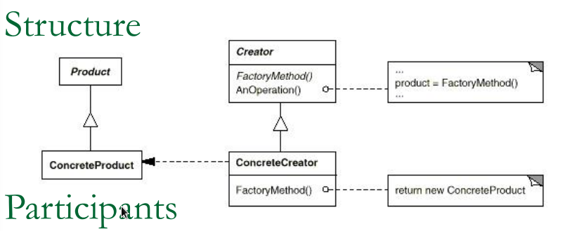
所有的new操作都被放到一个FactoryMethod()里，集中返回不同的Product实例
Abstract Factory(抽象工厂)
笔记本上补图！
Decorator(装饰器)？重看
装饰器是一种结构模式
当类中的属性经常变化时，要遵循可添加不可修改的原则。
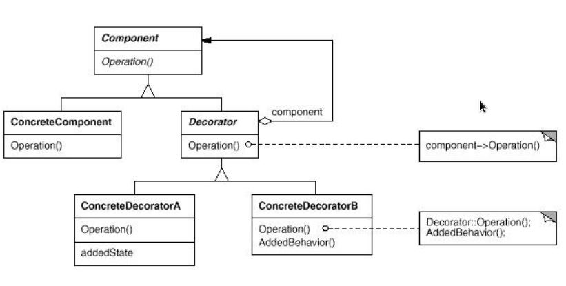
当给一个对象动态添加指责而不影响其他的时候，当继承会影响其他部分很不现实的时候，可采用装饰器。
实现
使用聚合，让新的类中包含原有的类，从而新类中可以调用旧类的行为。使用聚合而不使用继承，防止了子类爆炸，基类改变带来子类的修改！体现了CRP的原则。例子：Component component = new DecoratorC(new DecorationB(new DecoratorA()));
java中的IO
java中的IO就体现了这一设计模式，Writer,Reader类都是基于InputStream,OutputStream的封装，Stream用来做字节流处理，Writer/Reader做字符处理(java字符是unicode),例子new BufferedReader(new FileReader(new FileInputStream(new File("file"))))
Singleton(单例)
很多对象都只需要一个，例如线程池，缓存，对话框，处理注册表和配置的类，用于登陆的类，类似显卡打印机的类。
单例子模式同样可以扩展，允许若干个类的实例。单例模式比静态更灵活，更易扩展，静态类不能有状态，而单例的类可以有状态。
饿汉模式
程序启动时，类被实例化，线程安全。public class Singleton {
private static Singleton instance = new Singleton();
private Singleton(){}
public static Singleton getInstane() {
return instance;
}
}
懒汉模式
线程不安全，多线程访问时可能得到多个Singleton对象，(即每个线程有自己的单例对象)
改进：volatile关键字public class Singleton {
private volatile static Singleton instance;
private Singleton(){}
public static Singleton getInstane() {
if(singleton == null)
singleton = new Singleton();
return instance;
}
}
Command Behavioral(命令模式)
命令模式把一个请求封装到一个对象中。命令模式允许系统使用不同的请求把客户端参数化，对请求排队或者记录请求日志，可以提供命令的撤销和恢复功能。（Action,Transaction）
比如在一套用户界面工具箱里，按钮点击需要触发事件，但是事件是什么则需要对应的应用程序来实现。当行为被参数化为一个对象，你可以用一个回调函数来表达这种参数化，那就是，函数在某处被注册并在将来被返回。命令模式是回调的面向对象实现。
支持撤回
命令对象执行的操作可以讲上次对象的状态存在命令对象中，来消除命令执行带来的影响。命令对象可以存在一个List容器中，实现连续的撤回和取消撤回。(Undo and Redo)
支持记录变化
通过添加Load()，Store()两个操作，可以持久记录变化，他们可以在系统崩溃后用来恢复。
支持事务(transaction)
- 一个系统的高级操作基本都是建立在底层操作上
- 一个事务封装了对数据的一系列操作
- 命令模式有共同接口，可以想调用事务一样调用命令
- 命令模式把发送命令和执行命令的指责分开来，吧命令对象对托给不同的对象
- 每个命令都是一个对象
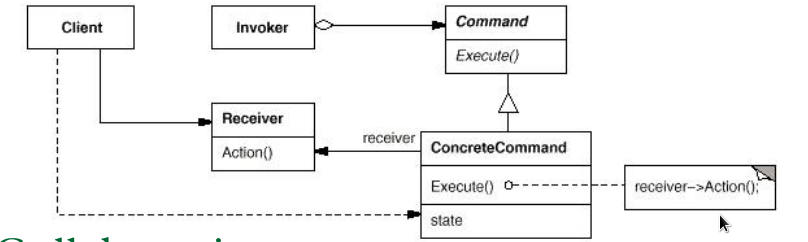
Command decouples the object that invokes
the operation from the one that knows how to
perform it. n You can assemble commands into a
composite command (Composite pattern). n It’s easy to add new Commands, because
you don’t have to change existing classes. n It is easy to implement Undo and Redo.
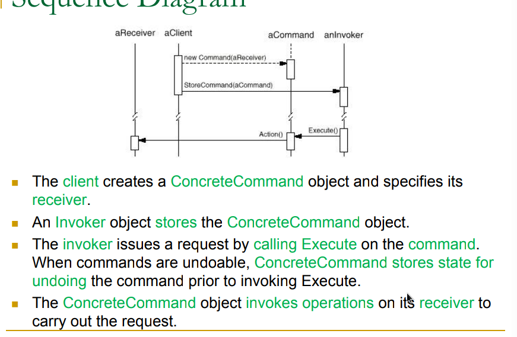
宏命令(macro command)
一堆命令变为一个命令：新建一个命令对象，其中包含一个拥有多个命令对象的容器，每次对象被触发时，则调用容器中所有对象的触发方法。
应用：调度器，线程池，任务队列
适配器(Adapter)
你需要在现有系统上使用一个新系统，但是新系统和现有的系统不能适配，于是需要增加（OpenClose原则）一个新的模块来适配。
适配时转化调用者的请求，使得能被新模块识别。适配器对被调用者和调用者是透明的，两者感觉不到请求被人处理。适配器使得原本因为接口不同不能工作的类能够一起使用。
实现
具体实现两种方式：
- 类适配器（继承）

java不能实现，因为不能多继承 - 对象适配器（聚合）

适合增加方法，但不适合修改
几个原则
- 适配器可以重写一些被适配者的方法
- 当要给一个类和他的所有子类适配，适配器不起作用
- 引入一个只有一个实例的适配类，就只有一种方式让客户访问到被适配的类。
- 一个适配器不能和多个被适配者一起使用
实际生活中的适配器:枚举和迭代
早期的容器实现了一个elements()方法，返回一个枚举类，我们先让所有容器都支持Iterator，于是可以使用一个适配器。
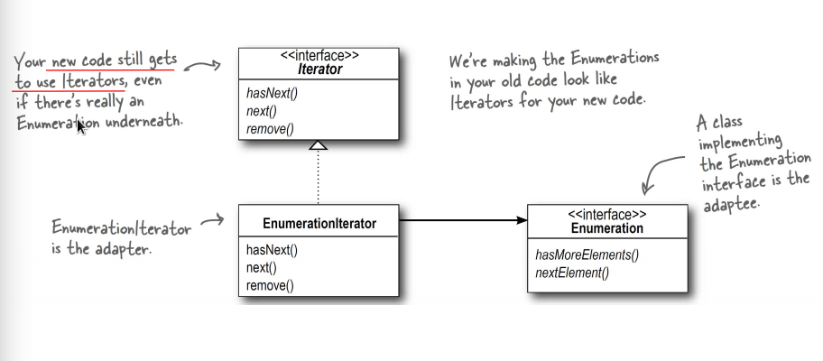
门面（Facade Pattern）
Facade不是一个具体的设计模式，更像diligent架构模式。减少接口太多的问题，使得暴露的接口尽可能少。
当一个行为中包含了对多个模块的调用时，创造一个封装这些多个调用的方法。使得子系统易于使用易于理解。
例子：家庭影院 电影开始 = {关灯，打开电视，播放….}
动机
- 当系统太复杂，则需要一个子系统来减少复杂性
PPT 12 - 12
设计准则
Principle of Least Knowledge (Law of Demeter)
- talk only to your immediate friends
Implement Issus
- 一般来说，一个系统只有一个门面，但是在一些情况下，多个门面也要被考虑。
- 不要给门面增加新的行为
- 让门面成为一个有具体子类的抽象类来对于子系统有不同实现。这样的抽象耦合使得客户端不知道哪种子系统被使用，使得客户端和子系统解耦。
总结
- 从客户角度来看，Facade模式不仅简化了整个组件系统的接口，同时对于内部组件与外部
客户程序来说，从某种程度上也达到了一种“解耦”的效果，子系统内部任何变化不会影响到Facade接口的变化。 - Facade对应的组件应该是“相互耦合关系比较大”的一系列组件，而不是一个简单功能的集合。
- Facade模式更注重从架构的层次去看整个系统，而不是单个类的层次。Facade更多是一
种架构设计模式 - Facade注重简化接口；Adapter注重转换接口；Decorater注重稳定接口的前提下为对象扩展功能。
模板方法(Template Method)*
模板方法是一种行为模式。
准备一个抽象类，将部分逻辑以具体方法以及具体构造子的形式实现，然后声明一些抽象方法来迫使子类实现剩余的逻辑。不同的子类可以以不同的方式实现这些抽象方法，从而对剩余的逻辑有不同的实现。
类似框架，固定了架构，具体实现由开发者决定。（FrameWork半完成软件）
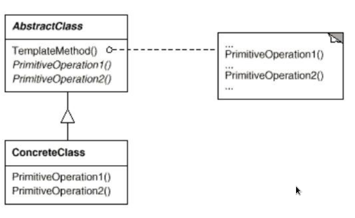
例子：springboot，httpServlet
迭代器(Iterator)
迭代器是一个行为模式，提供一种序列化访问聚合元素而不暴露底层结构的行为。
聚合是不变的，但是遍历的机制是变化的。比如，增加一个过滤算法，聚合的接口应该要为新的方法修改。迭代器做到让遍历和容器本身解耦。
结构
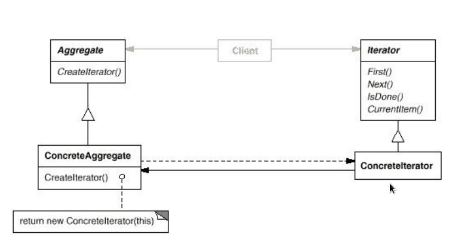
实现
- Public，破坏封装性，但是可以存储多个对象的游标
- Private内部类，定义在聚合类中，保护封装性
外部迭代器：List<String> s = Arrays.asList(new String[]{"A","B","C","D"});
Iterator<String> iter = s.listIterator();
while(iter.hasNext()) {
System.out.println(iter.next());
}
内部迭代器：s.forEach(name -> System.out.println(name))
当迭代器遍历的时候，修改一个聚合会很危险：
- 要么拷贝一份聚合，然后遍历拷贝，但是代价很大
- 每次增删，聚合自己改变自己迭代器的状态
静态迭代器：在创建时会拷贝一份聚合，在遍历时聚合的变化不影响
动态迭代器：动态迭代器是和静态迭代器相反，遍历的时候聚合的变化是允许的。（难以实现）
迭代器必须实现的操作：first，Next，isDone，currentItem,还有一些额外有用的操作：first，last，prev，skipTo。一般的迭代器遍历所有元素，而过滤迭代器只遍历满足条件的元素。
空迭代器：
- 一个空迭代器是迭代器的退化版本，用于处理边界问题
- 通过定义，一个空迭代器的遍历总是完成的，IsDone方法总是为true
- 空迭代器可以让遍历树状的的聚合更加方便（比如组合）
java5之后for循环中的迭代器：for(Object obj:collection) {
...
}
组合(Composite)
组合是一种结构模型，树状结构的对象 类似数据结构中的List
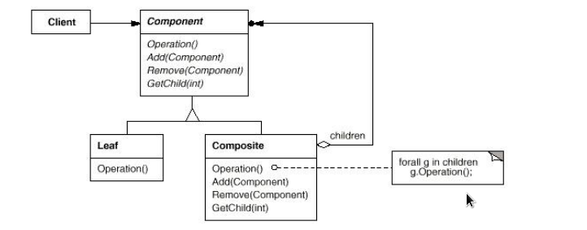
叶子和结点都实现component抽象类，当父结点获得请求，会传给孩子，一个个向下传。对于无法实现的方法，抛出异常即可。
这种结构下访问父结点困难，可以额外在componet中构建父指针。
用途中缀表达式求值 awt
状态(state)
状态模式是一种行为模式。
状态模式允许一个对象在其内部状态改变的时候改变其行为。这个对象看上去就像改变了它的类一样。
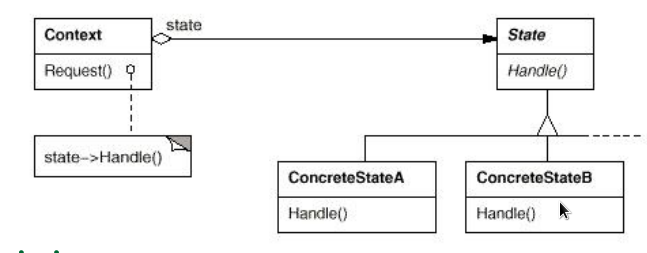
使用聚合+继承实现，方便扩展。Context是唯一暴露给客户的的类，state是具体状态的抽象
关于状态类的初始化
Lazy:只在具体的状态类必须时创建，不用就可以销毁
Eager:提前创建，并且不析构
扩展
可以建立一个表，来映射输入和具体的类，这样可以在运行时修改数据改变规则，而不是修改代码。
代理(proxy)
代理是一种结构模式
代理模式给某一个对象提供一个代理对象，并由代理对象控制对原对象的引用。
例如。在动态服务器连续的接受类似的请求时，会浪费资源对单一重复html对象多次渲染，一种解决方法就是使用一个代理类，代替目标类，只在必要时要求目标类重新渲染。
比如，一个图像代理类，只有在文档要求他显示的时候，才会从磁盘上加载图像
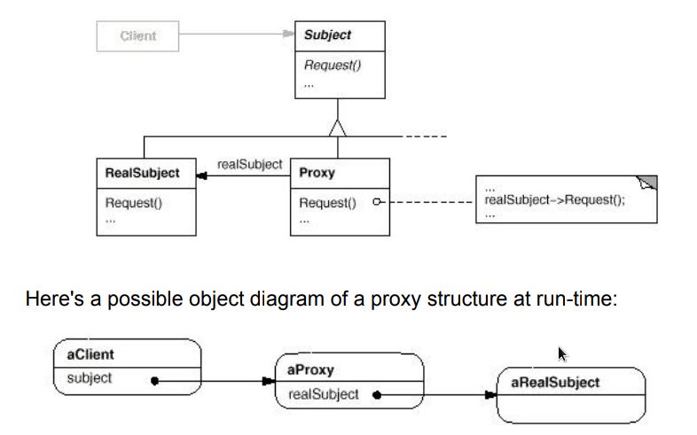
享元(Flyweight)*
结构化模式，共享元素，避免浪费。Flyweight means “次最轻量级的拳击选手”
享元模式以共享的方式高效地支持大量的细粒度对象)“通过尽量共享实例来避免new出实例(new不仅消耗内存，还会花费时间)
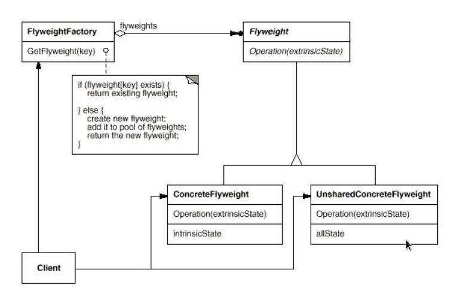
建造者(builder)
用于组装复杂实例的创建模式
- Build：英文的意思是建造和构建具有建筑结构的大型物体。
- 建造大楼时：打牢地基、搭建框架、然后自下而上一层层盖起来。通常需要先建造组成这个物体的各个部分，然后分阶段把它们组装起来
建造者模式将产品的结构和产品的零件建造过程对客户端隐藏起来，把对建造过程进行指挥的责任和具体建造者零件的责任分割开来，达到责任划分和封装的目的。
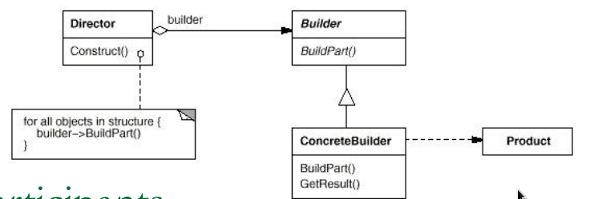
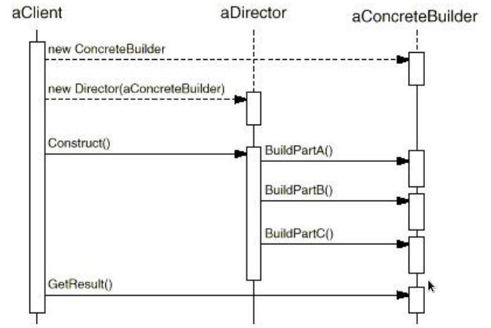
建造模式和模板方法模式的区别：建造模式是为了构造，模板方法用的继承。模板方法超类控制约束方法的顺序；建造模式基于聚合
责任链(chain of responsibility)
什么是“推卸责任”？
- 坏的方面：e.g., 去办事，被不同部门踢皮球。
- 好的方面：e.g., 当外部请求程序进行某个处理，但程序暂时无法直接决定由哪个对象负责处理时，就需要推卸责任。我们可以将多个对象组成一个职责链，然后按照它们在职责链上的顺序一个一个地找出谁来负责处理。
责任链部门：对于一个请求，能自己做就自己做，做不了就推卸给下一个人；下一个人能自己做就自己做，不能做再推卸给下一个人。
- 缺点：延迟
- 优点：解耦（发送者甚至不知道应该谁是接受者）
目的
避免了一个发送者固定一个接受者造成的耦合，让一个请求得到多次被传播的机会直到被处理。
例子：GUI中组建的焦点pass
结构
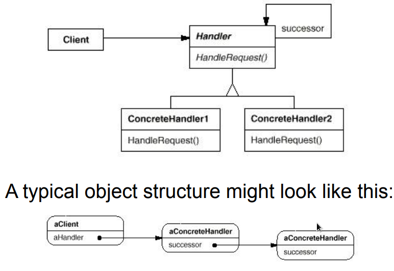
每一个handler‘持有’另一个handler的引用，做请求的传递
存在一个请求到达最后依然没有被解决的可能。
中介者/调停者(Mediator)*
中介者/调停者是一种行为模式。
中介者/调停者对象封装了一系列对象相互作用的方式，使得这些对象不必互相明显引用。从而使它们可以较松散地耦合。当这些对象中的某些对象之间的相互作用发生改变时，不会立即影响到其他的一些对象之间的相互作用。从而保证这些相互作用可以彼此独立地变化。
桥接(Bridge)*
希望增加新功能时
- 类的功能层次结构
- 父类具有基本功能
- 在子类中增加新的功能
- 当需要增加新功能时，我们可以从各个层次的类中找到最符合自己需求的类，然后以它为父类编写子类，并在子类中增加新的功能。
希望增加新的实现时
- 类的实现层次结构
- 父类通过声明抽象方法定义接口
- 子类通过实现具体方法来实现接口
当类的层次结构只有一层时，功能层次结构与实现结构是混杂在一个层次结构中的。这使得类层次结构变的复杂，也很难确定究竟该在类的哪一个层次结构中去增加子类。
需要将“类的功能层次结构”和“类的实现层次结构”分离为两个独立的类层次结构。然后在它们之间搭建一座bridge。
(桥接模式的用意是将抽象与实现解耦，使得二者可以独立地变化。)
- 抽象(Abstraction)不等于接口(Interface)，存在于多个实体中的共同的概念性联系，就是抽象。接口是一种抽
象的方式。 - 所谓强耦和，就是在编译时期已经确定的，无法在运行时期动态改变的关联；所谓弱耦和，就是可以动态地确定并且可以在运行时期动态地改变的关联。
原型(ProtoType)
#
使用原型实例指定要创建的对象类型，并通过复制此原型来创建新对象。
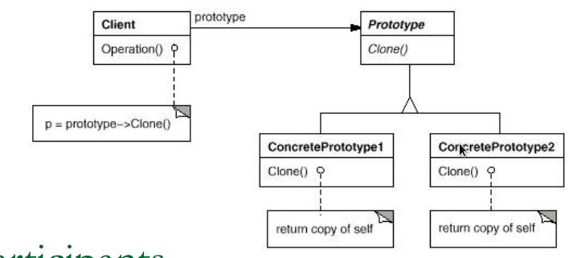
客户要求ProtoType克隆自己
- 优点：
- 一些情况工厂和建造模式也具有
- 在运行时增删产品
- 减少了创建器的结构
- 缺点：
- 所有子类必须实现克隆操作
java.Object的clone()方法执行的是一种浅复制，即：被复制的对象中指向的其他对象不会被复制实例，只会复制引用。
类似工厂方法，但不完全是，这种是用于复制一个备份，而且是可以保留状态的复制。
备忘录(Memento)*
备忘录是一种行为模式
目的
在不破坏封装的条件下，将一个对象的状态捕捉住，并外部化，存储起来，从而可以在将来合适的时候把这个对象还原到存储起来的状态。(对象的持久化，游戏存档)
实现
要在不破坏封装的情况下获取状态和恢复状态
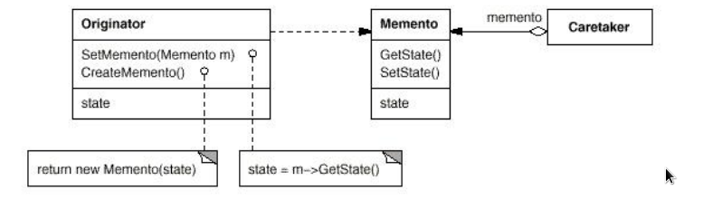
协作过程：
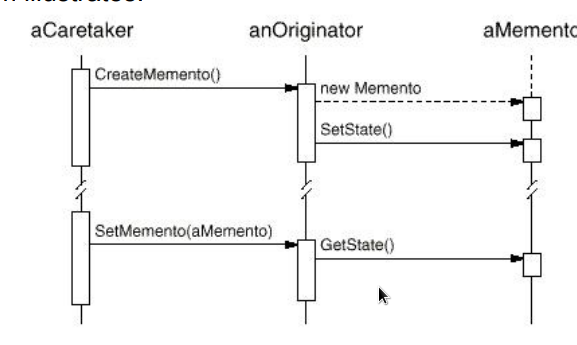
缺点
代价会很大。如果Originator必须复制大量信息以存储在Memento中，或者如果client经常创建并将Memento返回originate，那么Mementos可能会产生相当大的开销。
访问者(Visitor)*
访问者是一种行为模式.表示要对对象结构的元素执行的操作。访问者允许您定义新操作，而无需更改其操作的元素的类
对象结构包含许多具有不同接口的对象类，并且您希望对依赖于其具体类的这些对象执行操作。
需要对对象结构中的对象执行许多不同且不相关的操作，并且您希望避免使用这些操作“污染”它们的类。 当许多应用程序共享对象结构时，使用Visitor将操作放在那些需要它们的应用程序中。
定义对象结构的类很少改变，但是您经常希望在结构上定义新的操作
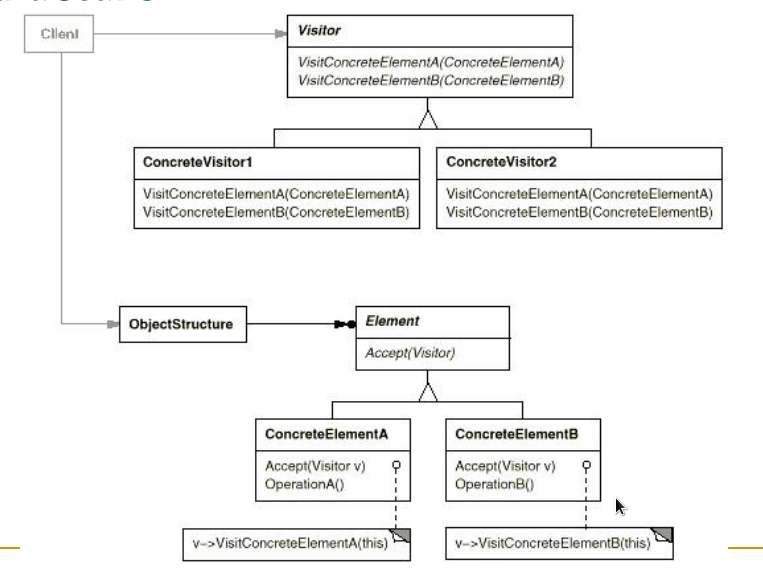
最典型的：文件系统的遍历
解释器(Interpreter)
解释器是一种行为模式，给定一个语言之后，解释器模式可以定义出其文法的一种表示，并同时提供一个解释器。客户端可以使用这个解释器来解释这个语言中的句子。
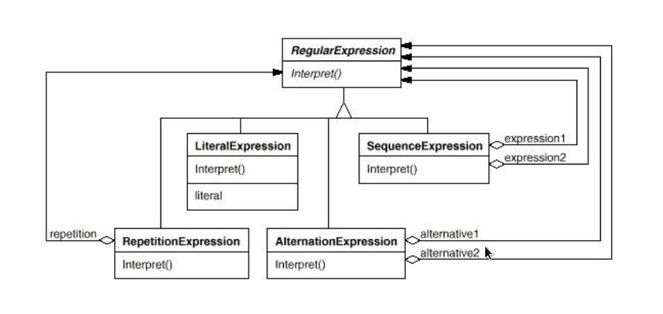
当存在要解释的语言时，请使用解释器模式，并且可以将语言中的语句表示为抽象语法树（抽象语法树）。这种模式下在语法简单时时候表现很好，不要考虑性能的问题。一般需要考虑到性能的时候，解释器通常不是用树状结构表示而是直接把他们翻译成另一种形式（四元式）。
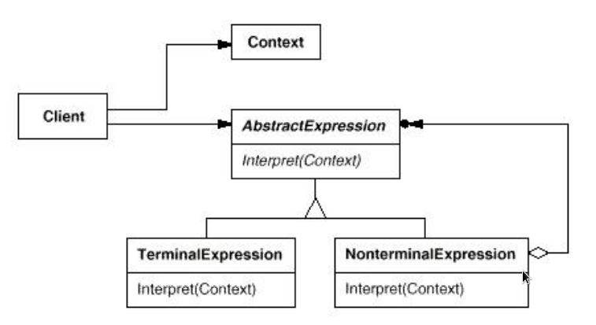
- AbstractExpression:申明一个适用于所有节点的抽象解释方法
- TerminalExpression：申明一个关联终结符的解释器
NonTerminalExpression: 声明一个关联非终结符的解释器,迭代解释
客户端将句子构建为抽象语法树NonterminalExpression和TerminalExpression实例。
- 然后客户端初始化上下文和调用Interpret操作。
- 每个NonterminalExpression节点根据每个子表达式的解释定义解释。
- 每个TerminalExpression的Interpret操作定义递归中的基本情况。
- 每个节点的解释操作使用上下文存储并访问解释器的状态
这种一个符号一个instance的设计，很容易实现和维护和扩展，因为这种模式用类来表示语法规则。复杂的语法很难维护，Interpreter模式为语法中的每个规则定义至少一个类。因此，包含许多规则的语法可能难以管理和维护。